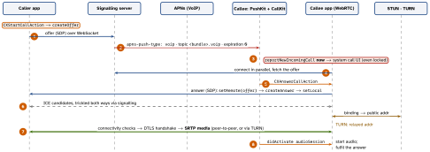

ios-platform · folio
In one line: A call is two planes: signalling (your server, any transport — usually a WebSocket — carrying SDP offer/answer and ICE candidates) and media (WebRTC: ICE finds a path through NATs with STUN, falls back to a TURN relay, then DTLS-SRTP encrypts audio/video peer-to-peer). On iOS the app is usually not running when the call arrives: a PushKit VoIP push wakes it, it must report the call to CallKit at once, and CallKit owns the system call UI and the audio session.
Download PDF Print view LaTeX source


WebRTC
- Signalling is not specified by WebRTC (JSEP, RFC 8829/9429): you move SDP and candidates over your own channel. SDP describes codecs, media sections, ICE ufrag/pwd and the DTLS certificate fingerprint. Offer/answer (RFC 3264)(unverified):
createOffer→setLocalDescription→ send; the peersetRemoteDescription→createAnswer→setLocalDescription→ send back. - ICE (RFC 8445) gathers candidates: host (LAN IP), server-reflexive (public IP:port a STUN server saw, RFC 8489), relay (a TURN server forwards, RFC 8656). Pairs are tested with STUN connectivity checks; the best working pair wins. Trickle ICE (RFC 8838)(unverified) sends candidates as they are found.
- NAT: STUN + simultaneous sends punch holes in most NATs; a symmetric NAT or a UDP-blocking firewall defeats it → TURN (UDP, TCP or TLS on 443). TURN costs you bandwidth — budget for it. Network change (Wi-Fi → cellular) → ICE restart.
- Security: media is always encrypted. DTLS handshake on the chosen path, checked against the SDP fingerprint; its keys feed SRTP (RFC 5764)(unverified). So a tampered signalling channel = MITM: protect it (TLS + auth). Data channels = SCTP over DTLS.
- Codecs: Opus audio; VP8 and H.264 mandatory for video. Group calls: mesh (N-1 uplinks each: small groups only) · SFU forwards streams (simulcast layers) · MCU mixes (server CPU).
- On iOS: no Apple WebRTC framework for native apps — ship libwebrtc (
RTCPeerConnectionFactory,RTCPeerConnection,RTCIceServer) or a vendor SDK. With CallKit setRTCAudioSession.useManualAudio = trueand enable audio only indidActivate.
Example — PushKit → CallKit (the must-report path)
let registry = PKPushRegistry(queue: .main)
registry.delegate = self; registry.desiredPushTypes = [.voIP]
func pushRegistry(_ r: PKPushRegistry,
didUpdate c: PKPushCredentials, for t: PKPushType) {
api.uploadVoIPToken(c.token) } // not the alert token
func pushRegistry(_ r: PKPushRegistry,
didReceiveIncomingPushWith p: PKPushPayload, for t: PKPushType,
completion: @escaping () -> Void) {
let from = p.dictionaryPayload["from"] as? String ?? "Unknown"
let u = CXCallUpdate()
u.remoteHandle = CXHandle(type: .generic, value: from)
let id = calls.uuid(for: p.dictionaryPayload) // server callId to UUID
provider.reportNewIncomingCall(with: id, update: u) { _ in completion() }
signalling.connect() // in parallel, not before
}
func provider(_ p: CXProvider, perform a: CXAnswerCallAction) {
Task { await call.answer(); a.fulfill() } } // fulfil once connectedBackground
VoIP push launches or wakes the app (even after a force-quit). During the call the audio + voip background modes keep it running while audio flows; after hang-up it suspends as usual. The old always-connected VoIP socket (setKeepAliveTimeout) is deprecated — PushKit replaced it.
Over WebSocket, not WebRTC
SignalR (.NET: hubs, falls back WebSocket → SSE → long polling) and Socket.IO (Engine.IO: rooms, acks, starts with HTTP long polling then upgrades) are protocols on top — a plain WebSocket client can’t talk to them; use their client library.
CallKit + PushKit — the rules
CXProvider(CXProviderConfiguration:supportsVideo,supportedHandleTypes,maximumCallsPerCallGroup, ringtone, icon) = system → app: it reports calls (reportNewIncomingCall,reportOutgoingCall(with:connectedAt:),reportCall(with:endedAt:reason:)) and delivers actions to its delegate.CXCallController= app → system:request(CXTransaction(action:))withCXStartCallAction,CXEndCallAction,CXSetMutedCallAction,CXSetHeldCallAction. Every action: do the work, thenfulfill()orfail().providerDidReset→ end everything.- The iOS 13 rule (Apple, PushKit docs): linking the iOS 13+ SDK, every
.voIPpush must be reported viareportNewIncomingCall; “if you fail to report a call to CallKit, the system will terminate your app”, and repeated failures may stop VoIP push delivery. So: report first, network second. - No CallKit (e.g. a chat “ping”) → no PushKit: use ordinary pushes + an NSE. Caller hung up before you connected → still report, then
reportCall(…reason: .remoteEnded); can’t reach your server →.failed. Don’t send more VoIP pushes to cancel — use your connection. - Push:
apns-push-type: voip,apns-topic= bundle ID +.voip,apns-expiration: 0(a ring that arrives late is worse than none); token fromdidUpdate pushCredentials— separate from the alert token. - Outgoing:
CXCallController.requestaCXStartCallAction→ your delegate’sperformstarts signalling,fulfill()→reportOutgoingCall(with:startedConnectingAt:)→ …connectedAt:when media flows. Recents / Siri hand the app anINStartCallIntent; it then requests the same action.
Audio session during a call
Set .playAndRecord + mode .voiceChat (echo cancellation; .videoChat for video) early, but don’t activate it yourself: CallKit activates it (with call priority) and calls provider(_:didActivate:) — start audio I/O there, stop in didDeactivate. Hold / a second call arrives as CXSetHeldCallAction; mute as CXSetMutedCallAction → disable the audio track.
Traps
- Doing network work before
reportNewIncomingCall— the app is killed on iOS 13+. - Using VoIP pushes for messages “to wake the app” — not allowed; NSE instead.
setActive(true)yourself / starting audio beforedidActivate— silent call.- “STUN is enough” — some users need TURN; no TURN = calls that never connect.
- Thinking WebRTC defines signalling, or that SRTP keys travel in SDP (only the fingerprint does).
Remember
Push → report → connect → answer → ICE → DTLS → SRTP → didActivate.